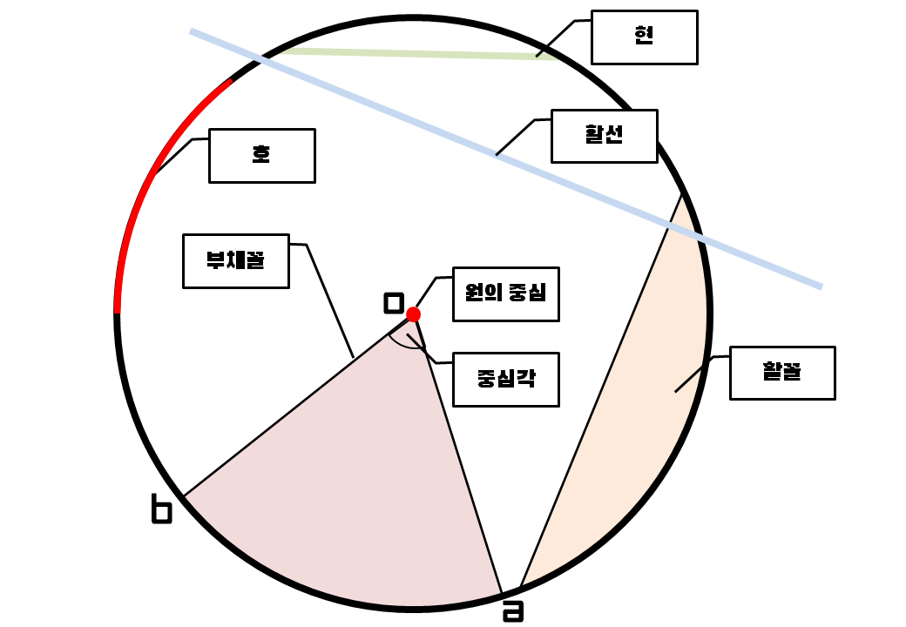

원
기초지식
원 : 하나의 점 o에서 같은 거리에 있는 무수한 점을 이은 도형
원의 중심 : 원을 이을 때의 기준이 된 점 o
원주 : 원의 둘레
호 : 원 위의 두 점을 끝부분으로 하는 원의 일부분
할선 : 원 위의 두 점을 지나는 직선
현 : 원 위의 두 점을 이은 선분
지름 : 원의 중심을 포함하는 현
부채꼴 : 원 o에서 호 ab와 두 반지름 oa와 ob로 이루어진 도형
중심각 : 부채꼴 aob에서 두 반지름 oa와 ob가 이루는 각, 즉 각 aob
활꼴 : 원 o에서 현과 호로 이루어진 도형
